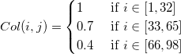

Daten aus Kugelkoordinaten in XYZ umwandeln und ein 3D-Diagramm erstellen
Convert-Spherical-to-XYZ
Zusammenfassung
In diesem Tutorial befassen wir uns mit dem Erstellen eines 3D-Diagramms mit Kugelkoordinaten sowie mit der Verwendung der X-Funktion sph2cart, um Daten in einer Arbeitsmappe oder Matrix aus Kugelkoordinaten in kartesische Koordinaten umzuwandeln.
Es ist wichtig, die Seite Converting Algorithm for sph2cart durchzugehen. Beachten Sie, dass Origin  als die Erhöhung und
als die Erhöhung und  als den Azimut in der Transformationsformel verwendet.
als den Azimut in der Transformationsformel verwendet.
 \ast cos \left ( \theta \right );")
 \ast sin \left ( \theta \right );")
;")
Was Sie lernen werden
- Daten in einem Arbeitsblatt (virtuelle Matrix) aus Kugelkoordinaten in kartesische Koordinaten umwandeln und ein 3D-Oberflächendiagramm erstellen
- Daten in einem Matrixobjekt aus Kugelkoordinaten in kartesische Koordinaten umwandeln und ein 3D-Oberflächendiagramm erstellen
- Daten in drei Matrixobjekte aus Kugelkoordinaten in kartesische Koordinaten umwandeln und ein diskretes 3D-Oberflächendiagramm erstellen
- Daten in einem Arbeitsblatt (XYZ) aus Kugelkoordinaten in kartesische Koordinaten (XYZ) umwandeln und ein 3D-Oberflächendiagramm erstellen
Schritte
3D-Oberflächendiagramm mit Farbabbildung für Daten in virtueller Matrix
Origin kann ein Oberflächendiagramm mit Daten in einer virtuellen Matrix (Kugelkoordinaten) erstellen und eine entsprechende Farbabbildung hinzufügen. Die folgenden Schritte beschreiben die Zeichnung eines Ellipsoids mit farbkodierter Oberfläche.
Dieses Tutorial basiert auf dem Projekt: <Origin-Verzeichnis>\Samples\Tutorial Data.opj.
- Öffnen Sie das Projekt Tutorial Data.opj und navigieren Sie zu dem Ordner Spherical Coordinates.
- Öffnen Sie die Daten der Virtuellen Matrix ellipsoid in Tutorial Data. Die Struktur der virtuellen Matrix wird in dem Diagramm unten gezeigt:
- In diesem Beispiel geht der Azimut von 0 bis 360 und die Erhöhung
 von -90 bis 90. Die für den Winkel verwendete Einheit ist Grad.
von -90 bis 90. Die für den Winkel verwendete Einheit ist Grad.
- Öffnen Sie das Skriptfenster, geben Sie den Code unten ein und führen Sie ihn aus:
sph2cart -d;- Die Einstellungen des Dialogs sph2cart stimmen mit denen der Abbildung unten überein. Klicken Sie dann auf OK. Drei neue Matrixobjekte werden erstellt, die XYZ entsprechen.
- Fügen Sie dann ein zusätzliches Matrixobjekt "4" nach der Matrix Z im Matrixlayer ein, das als Farbabbildung dient.
- Kopieren Sie die Daten in die Matrix colormap im Ordner der Kugelkoordinaten und fügen Sie die Daten in das neu hinzugefügte Matrixobjekt ein.
- Jetzt zeichnen Sie die Matrix in ein 3D-Oberflächendiagramm. Klicken Sie auf das Miniaturbild des Matrixobjekts "Z", um es zu aktivieren, und klicken auf Zeichnen: 3D: 3D Farbabbildung.
- Klicken Sie zum Öffnen des Dialogs Details Zeichnung doppelt auf die Oberfläche. Legen Sie die Parametrische Oberfläche im Dialog gemäß der Abbildung unten fest und klicken Sie auf OK, um die Einstellungen anzuwenden.
- Klicken Sie auf STRG+R, um die Achse neu zu skalieren. Klicken Sie doppelt auf die Achse, um den Dialog Achsen zu öffnen. Wechseln Sie zur Skalierung, um die XYZ-Achse auf -1,2 bis 1,2 zu setzen, und klicken Sie auf OK, um den Dialog zu schließen.
- Das Diagramm sollte in etwa folgendermaßen aussehen:

- Als Nächstes wenden Sie die Farbabbildung auf den Ellipsoid an. Klicken Sie doppelt auf die Oberfläche, um den Dialog Details Zeichnung zu öffnen, gehen Sie zur Registerkarte Füllen und ändern Sie die Konturfüllung aus Matrix in Mat(4).
- Wechseln Sie zur Registerkarte Farbplatte/Kontur und klicken Sie auf den Tabellenkopf, um die Dialoge Ebenen festlegen, Füllung und Konturlinien zu öffnen. Setzen Sie die Ebene auf Min/Max suchen und klicken Sie auf OK, um diese Einstellung anzuwenden. Setzen Sie die Füllung unter Palette laden auf "Maple". Klicken Sie auf OK und wählen Sie dann "Alle verbergen", um alle Zeilen zu verbergen. Klicken Sie auf Anwenden, um die Einstellungen anzuwenden.
- Gehen Sie zur Registerkarte Drahtgitter, deaktivieren Sie das Kontrollkästchen Aktivieren, um die Drahtgitterlinie zu schließen. Klicken Sie auf OK, um den Dialog zu schließen.
- Das Diagramm sieht am Ende in etwa folgendermaßen aus:

 | Der Azimut und die Erhöhung können ungleich im -Raum verteilt sein. |
Daten in ein Matrixobjekt umwandeln und ein 3D-Oberflächendiagramm erstellen
- Origin können eine
") -Oberflächenfunktion unter Kugelkoordinaten erstellen. Der Azimut, die Erhöhung und der Radius befinden sich in der gleichen Matrix. Bevor Sie mit Matrixwerte setzen eine Gleichung der Kugelkoordinaten bilden, können Sie sich auf sph2cart beziehen, wenn es um das Transformieren von Beziehungen und die Definition von Azimut und Erhöhung Ihres Systems geht.
-Oberflächenfunktion unter Kugelkoordinaten erstellen. Der Azimut, die Erhöhung und der Radius befinden sich in der gleichen Matrix. Bevor Sie mit Matrixwerte setzen eine Gleichung der Kugelkoordinaten bilden, können Sie sich auf sph2cart beziehen, wenn es um das Transformieren von Beziehungen und die Definition von Azimut und Erhöhung Ihres Systems geht.
- Erstellen Sie eine neue Matrix und wählen Sie im Hauptmenü Matrix: Dimensionen/Beschriftungen festlegen. Legen Sie die Dimension
 fest und bilden Sie Spalten in X mit
fest und bilden Sie Spalten in X mit ") ab und Spalten in Y mit
ab und Spalten in Y mit ") . X und Y sind Winkeldaten, wobei X der Azimut ist, der sich über die Spalten erstreckt, und Y die Erhöhung.
. X und Y sind Winkeldaten, wobei X der Azimut ist, der sich über die Spalten erstreckt, und Y die Erhöhung.- In diesem Beispiel verläuft der Azimut von 0 bis
 und die Erhöhung von
und die Erhöhung von  bis
bis  . Die für den Winkel verwendete Einheit ist Radiant.
. Die für den Winkel verwendete Einheit ist Radiant.
- Wählen Sie Matrix: Werte setzen im Hauptmenü. Die Formel, die in den Dialog Werte setzen eingegeben wird, sollte lauten:
abs(sqrt(0,5)*0,25*(15/pi)^0,5*sin(pi/2-y)*sin(pi/2-y)*(sin(2*x)-cos(2*x)))- Sie setzen die Matrixwerte mit Hilfe von Kugelfunktionen.
 ist spezifisch als Kugelfunktion festgelegt. Die linearen Kombinationen von entsprechen den d-Orbitalen des Wasserstoffatoms (d.h.
ist spezifisch als Kugelfunktion festgelegt. Die linearen Kombinationen von entsprechen den d-Orbitalen des Wasserstoffatoms (d.h.  ).
).
 und
und  in Function (1) sind:
in Function (1) sind:cos(2\theta )")
sin(2\theta )")
-
- Als Nächstes können Sie die Matrix aus Kugelkoordinaten in kartesische umwandeln. Dazu verwenden Sie die X-Funktion sph2cart. Wählen Sie Fenster: Skriptfenster im Hauptmenü, geben Sie dann das Skript unten ein und drücken Sie auf Enter, um es auszuführen:
sph2cart -d- Legen Sie die Einstellungen im Dialog sp2cart, wie auf der Abbildung unten zu sehen, fest. Das einzelne Matrixobjekt wird als Eingabedaten verwendet:

- Nachdem Sie auf OK geklickt haben, werden die Ergebnisse in einem neuen Matrixblatt (MSheet2) erzeugt.
- Jetzt zeichnen Sie die Matrix in ein 3D-Oberflächendiagramm. Wählen Sie bei aktivem Matrixobjekt Z in MSheet2
- Wählen Sie Zeichnen: 3D: 3D Farbabbildung im Hauptmenü.
- Klicken Sie doppelt auf die Oberfläche, um den Dialog Details Zeichnung zu öffnen. Legen Sie die Einstellungen für die parametrische Oberfläche gemäß der Abbildung unten fest und klicken Sie auf OK.
- Klicken Sie auf STRG+R, um die Achse neu zu skalieren, und klicken Sie doppelt auf die Achse, um den Dialog Achse zu öffnen. Ändern Sie die Skalierung für die XYZ-Achse auf von -0,5 bis 0,5, setzen Sie den Wert der Großen Hilfsstriche auf 0,2 und klicken Sie auf OK, um den Dialog zu schließen.
- Das erstellte Diagramm sollte folgendem ähnlich sein:

- Klicken Sie doppelt auf die Oberfläche, um den Dialog Diagrammeigenschaften zu öffnen. Gehen Sie zur Registerkarte Farbpalette/Kontur, klicken Sie auf die Schaltfläche Ebene/Füllen/Linie und legen Sie die Optionen der Dialoge getrennt voneinander fest.
- Gehen Sie dann zur Registerkarte Drahtgitter, deaktivieren Sie das Kontrollkästchen Auto für Transparenz und setzen Sie den Wert auf 70%.
- Sie können im Tutorial Parametrische Oberfläche Einzelheiten zum Festlegen der Farbabbildung nachlesen. Das fertiggestellte Diagramm wird unten gezeigt:
Daten in drei Matrixobjekte umwandeln und ein 3D-Oberflächendiagramm erstellen
Origin können eine -Oberflächenfunktion unter Kugelkoordinaten erstellen. Der Azimut, die Erhöhung und der Radius befinden sich in unterschiedlichen Matrizen. Die folgenden Schritte zeigen Ihnen, wie mehrere Oberflächendiagramme mit Hilfe von drei Matrizen erstellt werden, und sph2cart verwendet wird, um sie in einen XYZ-Raum zu konvertieren.
- Erstellen Sie eine neue Matrix. Legen Sie die Matrixdimensionen im Dialog Dimensionen und Beschriftungen festlegen fest und klicken Sie dann auf OK.
- Klicken Sie auf die Schaltfläche D in der rechten Ecke der Matrix und klicken Sie auf Hinzufügen, um zwei weitere Matrixobjekte zur Matrixmappe hinzuzufügen.
-
- Der Azimut wird in dem ersten Matrixobjekt platziert. Klicken Sie bei aktivem ersten Matrixobjekt (klicken Sie auf die Schaltfläche D und wechseln Sie zwischen 1/2/3) im Hauptmenü auf Matrix: Werte setzen. Die Matrixwerte für Azimut werden auf diese Weise festgelegt:
- Legen Sie den Matrixwert unter Verwendung des Ausdrucks unten fest:
(j==33||j==66)?1/0:(pi/32*j*(j<33)+pi/32*(j-33)*(j>33&&j<66)+pi/32*(j-66)*(j>66))- Der Wert von 0 bis zeigen drei Loops, und die Spalte (33) und Spalte (66) sollten fehlende Werte sein.
- Die Erhöhung wird in dem zweiten Matrixobjekt positioniert (wählen Sie Matrix 2 in Graph von Schritt 2). Legen Sie die Werte für die Erhöhung mit folgendem Ausdruck fest:
pi/32*(i-17)
- Der Radius (Ausdruck unten) wird in dem dritten Matrixobjekt untergebracht.
- 
- Die Methode zum Setzen der Werte für den Radius ist ebenfalls stückweise. Sie können sich auf die Schritte 3, 4 und 5 beziehen. Verwenden Sie den untenstehenden Code zum Werte setzen:
1*(j<33)+0,*(j>33&&j<66)+0,4*(j>66)
- Nach Setzen der Werte für drei Matrizen können Sie die Daten mit Hilfe von sph2cart in den XYZ-Raum umwandeln. Öffnen Sie das Skriptfenster, geben Sie unten den Code ein und führen Sie ihn aus:
sph2cart -d;- Die Einstellungen des Dialogs sph2cart stimmen mit denen der Abbildung unten überein. Klicken Sie dann auf OK. Drei neue Matrizen werden für XYZ erstellt.
- Erstellen Sie ein 3D-Oberflächendiagramm mit Hilfe des XYZ-Matrixobjekts, das in dem neuen Matrixlayer erzeugt wurde. Die Schritte sind den Schritten 5, 6, 7 und 8 aus dem obenstehenden Abschnitt Daten in einem Matrixobjekt umwandeln und ein 3D-Oberflächendiagramm erstellen sehr ähnlich.
- Das fertiggestellte Diagramm wird unten gezeigt:
Daten in drei Spalten umwandeln und eine 3D-Raumkurve erstellen
Origin kann eine 3D-Raumkurve mit ungleich verteilten Daten in der XYZ-Spalte (Kugelkoordinaten) erstellen. Die folgenden Schritte beschreiben das Zeichnen einer nicht-isometrischen Spirale mit einer Kugelform.
- Erstellen Sie eine neue Arbeitsmappe mit drei Spalten X, Y und Z. Setzen Sie die Werte auf von bis
 für die X-Spalte über Spalten füllen mit: Einer Reihe von Zahlen
für die X-Spalte über Spalten füllen mit: Einer Reihe von Zahlen- Setzen Sie den Wert für die Y-Spalte über Werte setzen.
- Setzen Sie den Wert für die Z-Spalte über Werte setzen und legen Sie den Wert der Konstanten mit "4" fest.
- In diesem Beispiel entsprechen X, Y bzw. Z Azimut, Erhöhung bzw. Radius.
- Öffnen Sie das Skriptfenster, geben Sie den Code unten ein und führen Sie ihn aus:
sph2cart -d;- Die Einstellungen des Dialogs sph2cart stimmen mit denen der Abbildung unten überein. Klicken Sie dann auf OK. Es werden drei neue Spalten für XYZ erstellt.
- Zeichnen Sie die neuen XYZ-Daten mit Zeichnen: 3D: 3D-Punktdiagramm. Setzen Sie die Symbolgröße auf 0 und verbinden Sie die Symbole mit einer Linie. Klicken Sie auf OK.
- Passen Sie die Skalierungen und die Perspektivansicht weiter an. Das fertige Diagramm sieht in etwas folgendermaßen aus:
Mit den neu erzeugten XYZ-Daten können Sie ein 3D-Oberflächendiagramm erstellen sowie Zeichnen > 3D: 3D Farbabbildung bei markierten XYZ-Spalten auswählen.
| Der Azimut und die Erhöhung in X und Y können gleich oder ungleich im -Raum verteilt sein. |